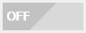
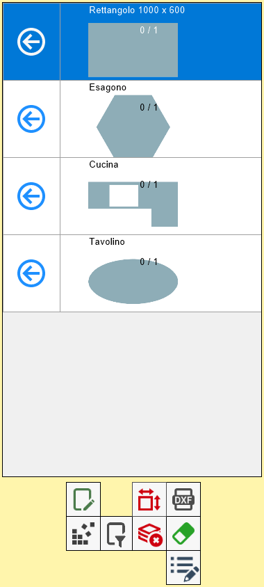
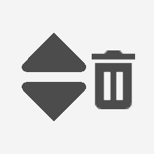

Questa funzione permette all’operatore di applicare un filtro e/o ordinare i pezzi della lista.
Alla pressione del pulsante si aprirà la seguente finestra.

Lista dei pezzi filtrata
Una volta che sono stati impostati dei criteri per filtrare oppure ordinare i pezzi, si possono applicare utilizzando il pulsante che si trova in alto a destra.
 | Attiva/Disattiva |
I pezzi che non corrispondono ai criteri scelti per il filtro, non verranno mostrati nella lista dei pezzi.
I pezzi presenti sull’area di lavoro che non soddisfano i criteri stabiliti dal filtro verranno rimossi.
Nel seguente esempio, si vogliono mostrare solo i pezzi aventi altezza maggiore a 600 mm, e disporli in ordine alfabetico crescente.
Prima di applicare il filtro e l’ordinamento | Dopo aver applicato il filtro e l’ordinamento |
 |  |
La funzione di filtro e ordinamento non funziona con i pezzi commerciali.
I criteri di filtro e ordinamento verranno rispettati anche dalla funzionalità di nesting.
Filtrare i pezzi
Nella sezione superiore di questa finestra, l’operatore può scegliere di aggiungere un filtro in base a diverse caratteristiche dei pezzi.

Come si può vedere, si possono trovare i seguenti pulsanti.
Modalità di applicazione del filtro “Esclusione” | |
 | Aggiungi filtro |
 | Elimina filtri |
Come creare un filtro
Per creare un filtro, scegliere dal primo menù a tendina sulla sinistra la proprietà da utilizzare tra quelle proposte.

Una volta decisa la caratteristica discriminante, selezionare un operatore relazionale dal secondo menù.

Successivamente, inserire un valore adatto alla proprietà nella casella a fianco per creare una condizione logica.

In questo momento, attraverso il pulsante sulla destra della casella di testo, si decide come il filtro che si sta creando vada ad interagire con gli altri filtri dell’elenco, se presenti.
In modalità “Esclusione“, un pezzo dovrà soddisfare
contemporaneamente
la condizione logica che si sta per creare e il risultato delle precedenti.
In modalità “Inclusione“, un pezzo dovrà soddisfare la condizione che si sta per creare
oppure
il risultato delle precedenti.
Per completare la creazione del filtro, utilizzare l’ultimo pulsante collocato su questa riga. Il filtro si andrà ad aggiungere all’elenco sottostante.

Ordinare i pezzi
Nella sezione inferiore della finestra, l’operatore può decidere di ordinare i pezzi in base ad alcune proprietà.

Dopo aver selezionato una voce tra quelle proposte nel menù a tendina, si potranno svolgere le seguenti azioni:
Ordinamento Crescente/Decrescente | |
 | Elimina ordinamento |
Ordinamento multiplo (Opzionale)
Questa funzionalità rende possibile ordinare i pezzi della lista utilizzando più di un criterio.

Con questa modalità, è possibile aggiungere criteri di ordinamento utilizzando i seguenti pulsanti:
 | Aggiungi criterio di ordinamento ordinamento |
 | Cambia posizione |
I criteri contenuti in questo elenco vengono rispettati dall’alto verso il basso.
Ciò significa che i pezzi vengono ordinati secondo il primo criterio. Se due o più pezzi possiedono lo stesso valore per la proprietà collegata al primo criterio, verranno ordinati secondo il criterio successivo. E così a seguire per ogni criterio della lista.
Nella seguente immagine viene mostrato un esempio di ordinamento multiplo.